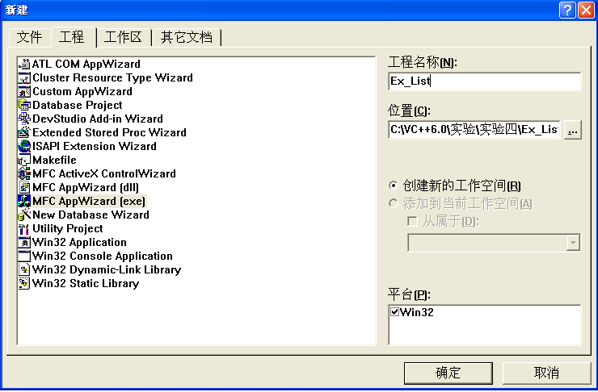

<!DOCTYPE html>


<html lang="zh-CN">


<head>
  <meta charset="utf-8" />
   
  <meta name="keywords" content="翟天野 天野 翟天野博客 tianye zhaitianye" />
   
  <meta name="description" content="The seeker of the world" />
  
  <meta name="viewport" content="width=device-width, initial-scale=1, maximum-scale=1" />
  <title>
    vc++6.0-列表控件和树控件 |  Tianye Blog
  </title>
  <meta name="generator" content="hexo-theme-ayer">
  
  <link rel="shortcut icon" href="/favicon.ico" />
  
  
<link rel="stylesheet" href="/dist/main.css">

  
<link rel="stylesheet" href="/comm/remixicon.min.css">

  
<link rel="stylesheet" href="/css/custom.css">

  
  
<script src="/comm/pace.min.js"></script>

  
  

  
<script>
var _hmt = _hmt || [];
(function() {
	var hm = document.createElement("script");
	hm.src = "https://hm.baidu.com/hm.js?a65f4359920e6c4b5b2b6d0519751045";
	var s = document.getElementsByTagName("script")[0]; 
	s.parentNode.insertBefore(hm, s);
})();
</script>


</head>

</html>

<body>
  <div id="app">
    
      
      <canvas width="1777" height="841"
        style="position: fixed; left: 0px; top: 0px; z-index: 99999; pointer-events: none;"></canvas>
      
    <main class="content on">
      <section class="outer">
  <article
  id="post-vc++6.0-列表控件和树控件"
  class="article article-type-post"
  itemscope
  itemprop="blogPost"
  data-scroll-reveal
>
  <div class="article-inner">
    
    <header class="article-header">
       
<h1 class="article-title sea-center" style="border-left:0" itemprop="name">
  vc++6.0-列表控件和树控件
</h1>
 

    </header>
     
    <div class="article-meta">
      <a href="/2016/03/vc++6.0-%E5%88%97%E8%A1%A8%E6%8E%A7%E4%BB%B6%E5%92%8C%E6%A0%91%E6%8E%A7%E4%BB%B6/" class="article-date">
  <time datetime="2016-03-13T13:51:58.000Z" itemprop="datePublished">2016-03-13</time>
</a> 
  <div class="article-category">
    <a class="article-category-link" href="/categories/vc-6-0/">vc++6.0</a>
  </div>
  
<div class="word_count">
    <span class="post-time">
        <span class="post-meta-item-icon">
            <i class="ri-quill-pen-line"></i>
            <span class="post-meta-item-text"> 字数统计:</span>
            <span class="post-count">932</span>
        </span>
    </span>

    <span class="post-time">
        &nbsp; | &nbsp;
        <span class="post-meta-item-icon">
            <i class="ri-book-open-line"></i>
            <span class="post-meta-item-text"> 阅读时长≈</span>
            <span class="post-count">3 分钟</span>
        </span>
    </span>
</div>
 
    </div>
      


  
    <div class="article-entry" itemprop="articleBody">
       
  <p><strong>实验目的：</strong> （1）创建一个对话框应用程序Ex_List，其主界面如图4.1所示。 </p>
<p></p>
<p>图4.1 Ex_List界面</p>
<p>（2）设计一个如图4.2所示的“学生课程成绩”对话框，创建并完善该对话框类CScoreDlg。</p>
<p></p>
<p>图4.2 “学生课程成绩”对话框</p>
<p>（3）实现功能：单击图4.1中的“学生课程成绩”按钮，弹出“学生课程成绩”对话框，单击“添加”按钮，学生课程成绩添加到列表控件。若选中列表项，“修改”按钮由原来的禁用变成可用，单击“修改”按钮，则弹出的“学生课程成绩”对话框中的“添加”按钮标题变成“修改”，单击“学生课程成绩”对话框中的“修改”按钮，该列表项的内容被修改。 （4）按照教材“树控件”中的示例进行实验。 <strong>实验仪器：</strong></p>
<p>电脑一台(CPU：Inter(R) Xeon(R) E3-1230 v3 @ 3.3GHz<br> 内存：8.0GB 操作系统：Win8.1虚拟机xp 使用软件：Vc++ 6.0)</p>
<p>1．启动Visual C++ 6.0 打开计算机，启动Visual C++ 6.0系统。 </p>
<p>2．创建对话框应用程序Ex_List，并设计其界面 ① 选择“文件”→“新建”菜单，在弹出的“新建”对话框中选择“工程”页面，选择MFC AppWizard（exe），在工程框中输入Ex_List，并将工程文件夹定位到“…\Visual C++程序\实验\实验4”。 </p>
<p> </p>
<p>② 单击“确定”按钮，在出现的Step 1对话框中选择“基本对话（框）”应用程序类型，单击“完成”按钮。 </p>
<p> </p>
<p>③ 在对话框编辑器中，单击对话框工具栏上的切换网格按钮 </p>
<p></p>
<p>显示对话框网格，将对话框标题改为“列表控件”。 </p>
<p> </p>
<p>④ 调整对话框的大小，删除对话框中间的“TODO: 在这里设置对话控制。”静态文本控件和“确定”按钮控件，将“取消”按钮标题改为“退出”，并移至对话框的下方。 </p>
<p> </p>
<p>⑤ 添加两个按钮，一个是“学生课程成绩]按钮，ID为IDC_BUTTON_SCORE，另一个是“修改”按钮，ID为IDC_BUTTON_CHANGE。 </p>
<p> </p>
<p>⑥ 添加一个列表控件，取其默认ID号，将“查看”风格设为Report。 </p>
<p> </p>
<p>3．添加并设计“学生课程成绩”对话框 ① 按Ctrl+R快捷键，弹出“插入资源”对话框，在资源类型列表中选择Dialog，单击“新建”按钮。 ② 将该对话框资源的ID设为IDD_SCORE，标题设为“学生课程成绩”，字体设为“宋体，9号”。 ③ 将OK和Cancel按钮的标题改为“添加”和“取消”。 ④ 打开对话框网格，参看图4.2的控件布局，为对话框添加如表所示的一些控件。 </p>
<p> </p>
<p>⑤ 按Ctrl+W快捷键或双击对话框资源模板的空白处，为IDD_SCORE创建一个对话框类CScoreDlg。 ⑥ 打开ClassWizard的Member Variables页面，看Class name是否是CScoreDlg，选中所需的控件ID号，双击鼠标或单击Add Variables按钮。依次为表4.2控件增加成员变量。 </p>
<p> </p>
<p>⑦ 用MFC ClassWizard为按钮IDOK添加BN_CLICKED消息映射，并增加下列代码： </p>
<p> </p>
<p>⑧ 为CScoreDlg类添加一个公有型CString类型成员变量m_strOKText，用来设置IDOK按钮的标题，并在CScoreDlg类构造函数中，将m_strOKText设为空， ⑨ 用MFC ClassWizard为CScoreDlg类映射WM_INITDIALOG消息 4．完善CEx_ListDlg类代码 ① 用MFC ClassWizard为CEx_ListDlg类添加列表控件（IDC_LIST1）变量m_ListCtrl，变量类型为CListCtrl。 </p>
<p> </p>
<p>② 在CEx_ListDlg::OnInitDialog函数中添加设置列表控件标题头代码： </p>
<p> </p>
<p>③ 用MFC ClassWizard映射按钮IDC_BUTTON_SCORE的BN_CLICKED消息，并添加下列代码： </p>
<p> </p>
<p>④ 用MFC ClassWizard映射按钮IDC_BUTTON_CHANGE的BN_CLICKED消息，并添加下列代码： </p>
<p> </p>
<p>⑤ 用MFC ClassWizard映射列表控件IDC_LIST1的LVN_ITEMCHANGED消息，并添加下列代码： </p>
<p> </p>
<p>⑥ 在Ex_ListDlg.cpp文件的前面添加CScoreDlg类的头文件包含： </p>
<p> </p>
<p>⑦ 编译运行并测试。 </p>
<p> </p>
<p> </p>
<p> </p>
<p> </p>
 
      <!-- reward -->
      
    </div>
    

    <!-- copyright -->
    
    <div class="declare">
      <ul class="post-copyright">
        <li>
          <i class="ri-copyright-line"></i>
          <strong>版权声明： </strong>
          本博客所有文章，未经许可，任何单位及个人不得做营利性使用！如有侵权请联系作者。
        </li>
      </ul>
    </div>
    
    <footer class="article-footer">
       
  <ul class="article-tag-list" itemprop="keywords"><li class="article-tag-list-item"><a class="article-tag-list-link" href="/tags/vc-6-0/" rel="tag">vc++6.0</a></li></ul>

    </footer>
  </div>

   
  <nav class="article-nav">
    
      <a href="/2016/03/vc++6.0-%E8%8F%9C%E5%8D%95%E3%80%81%E5%B7%A5%E5%85%B7%E6%A0%8F%E5%92%8C%E7%8A%B6%E6%80%81%E6%A0%8F/" class="article-nav-link">
        <strong class="article-nav-caption">上一篇</strong>
        <div class="article-nav-title">
          
            vc++6.0-菜单、工具栏和状态栏
          
        </div>
      </a>
    
    
      <a href="/2016/03/vc++6.0-%E5%B8%B8%E7%94%A8%E6%8E%A7%E4%BB%B62/" class="article-nav-link">
        <strong class="article-nav-caption">下一篇</strong>
        <div class="article-nav-title">vc++6.0-常用控件2</div>
      </a>
    
  </nav>

  
     
</article>

</section>
      <footer class="footer">
  <div class="outer">
    <ul>
      <li>
        Copyrights &copy;
        2015-2020
        <i class="ri-heart-fill heart_icon"></i> 翟天野
      </li>
    </ul>
    <ul>
      <li>
        
      </li>
    </ul>
    <ul>
      <li>
        
      </li>
    </ul>
    <ul>
      
    </ul>
    <ul>
      <li>
        <!-- cnzz统计 -->
        
      </li>
    </ul>
  </div>
</footer>
      <div class="float_btns">
        <div class="totop" id="totop">
  <i class="ri-arrow-up-line"></i>
</div>

<div class="todark" id="todark">
  <i class="ri-moon-line"></i>
</div>

      </div>
    </main>
    <aside class="sidebar on">
      <button class="navbar-toggle"></button>
<nav class="navbar">
  
  <div class="logo">
    <a href="/"></a>
  </div>
  
  <ul class="nav nav-main">
    
    <li class="nav-item">
      <a class="nav-item-link" href="/">主页</a>
    </li>
    
    <li class="nav-item">
      <a class="nav-item-link" href="/archives">归档</a>
    </li>
    
    <li class="nav-item">
      <a class="nav-item-link" href="/categories">分类</a>
    </li>
    
    <li class="nav-item">
      <a class="nav-item-link" href="/tags">标签</a>
    </li>
    
    <li class="nav-item">
      <a class="nav-item-link" href="/about">关于</a>
    </li>
    
  </ul>
</nav>
<nav class="navbar navbar-bottom">
  <ul class="nav">
    <li class="nav-item">
      
      
    </li>
  </ul>
</nav>
<div class="search-form-wrap">
  <div class="local-search local-search-plugin">
  <input type="search" id="local-search-input" class="local-search-input" placeholder="Search...">
  <div id="local-search-result" class="local-search-result"></div>
</div>
</div>
    </aside>
    <script>
      if (window.matchMedia("(max-width: 768px)").matches) {
        document.querySelector('.content').classList.remove('on');
        document.querySelector('.sidebar').classList.remove('on');
      }
    </script>
    <div id="mask"></div>

<!-- #reward -->
<div id="reward">
  <span class="close"><i class="ri-close-line"></i></span>
  <p class="reward-p"><i class="ri-cup-line"></i>请我喝杯咖啡吧~</p>
  <div class="reward-box">
    
    
  </div>
</div>
    
<script src="/js/jquery-2.0.3.min.js"></script>


<script src="/js/lazyload.min.js"></script>


<!-- Tocbot -->


<script src="/js/tocbot.min.js"></script>

<script>
  
  if(document.getElementsByClassName("tocbot").length !== 0){
    tocbot.init({
      tocSelector: '.tocbot',
      contentSelector: '.article-entry',
      headingSelector: 'h1, h2, h3, h4, h5, h6',
      hasInnerContainers: true,
      scrollSmooth: true,
      scrollContainer: 'main',
      positionFixedSelector: '.tocbot',
      positionFixedClass: 'is-position-fixed',
      fixedSidebarOffset: 'auto'
    });
  }
</script>

<script src="/comm/jquery.modal.min.js"></script>
<link rel="stylesheet" href="/comm/jquery.modal.min.css">
<script src="/comm/jquery.justifiedGallery.min.js"></script>

<script src="/dist/main.js"></script>

<!-- ImageViewer -->

<!-- Root element of PhotoSwipe. Must have class pswp. -->
<div class="pswp" tabindex="-1" role="dialog" aria-hidden="true">

    <!-- Background of PhotoSwipe. 
         It's a separate element as animating opacity is faster than rgba(). -->
    <div class="pswp__bg"></div>

    <!-- Slides wrapper with overflow:hidden. -->
    <div class="pswp__scroll-wrap">

        <!-- Container that holds slides. 
            PhotoSwipe keeps only 3 of them in the DOM to save memory.
            Don't modify these 3 pswp__item elements, data is added later on. -->
        <div class="pswp__container">
            <div class="pswp__item"></div>
            <div class="pswp__item"></div>
            <div class="pswp__item"></div>
        </div>

        <!-- Default (PhotoSwipeUI_Default) interface on top of sliding area. Can be changed. -->
        <div class="pswp__ui pswp__ui--hidden">

            <div class="pswp__top-bar">

                <!--  Controls are self-explanatory. Order can be changed. -->

                <div class="pswp__counter"></div>

                <button class="pswp__button pswp__button--close" title="Close (Esc)"></button>

                <button class="pswp__button pswp__button--share" style="display:none" title="Share"></button>

                <button class="pswp__button pswp__button--fs" title="Toggle fullscreen"></button>

                <button class="pswp__button pswp__button--zoom" title="Zoom in/out"></button>

                <!-- Preloader demo http://codepen.io/dimsemenov/pen/yyBWoR -->
                <!-- element will get class pswp__preloader--active when preloader is running -->
                <div class="pswp__preloader">
                    <div class="pswp__preloader__icn">
                        <div class="pswp__preloader__cut">
                            <div class="pswp__preloader__donut"></div>
                        </div>
                    </div>
                </div>
            </div>

            <div class="pswp__share-modal pswp__share-modal--hidden pswp__single-tap">
                <div class="pswp__share-tooltip"></div>
            </div>

            <button class="pswp__button pswp__button--arrow--left" title="Previous (arrow left)">
            </button>

            <button class="pswp__button pswp__button--arrow--right" title="Next (arrow right)">
            </button>

            <div class="pswp__caption">
                <div class="pswp__caption__center"></div>
            </div>

        </div>

    </div>

</div>

<link rel="stylesheet" href="/comm/photoswipe_dist/photoswipe.css">
<link rel="stylesheet" href="/comm/photoswipe_dist/default-skin/default-skin.css">
<script src="/comm/photoswipe_dist/photoswipe.min.js"></script>
<script src="/comm/photoswipe_dist/photoswipe-ui-default.min.js"></script>

<script>
    function viewer_init() {
        let pswpElement = document.querySelectorAll('.pswp')[0];
        let $imgArr = document.querySelectorAll(('.article-entry img:not(.reward-img)'))

        $imgArr.forEach(($em, i) => {
            $em.onclick = () => {
                // slider展开状态
                // todo: 这样不好，后面改成状态
                if (document.querySelector('.left-col.show')) return
                let items = []
                $imgArr.forEach(($em2, i2) => {
                    let img = $em2.getAttribute('data-idx', i2)
                    let src = $em2.getAttribute('data-target') || $em2.getAttribute('src')
                    let title = $em2.getAttribute('alt')
                    // 获得原图尺寸
                    const image = new Image()
                    image.src = src
                    items.push({
                        src: src,
                        w: image.width || $em2.width,
                        h: image.height || $em2.height,
                        title: title
                    })
                })
                var gallery = new PhotoSwipe(pswpElement, PhotoSwipeUI_Default, items, {
                    index: parseInt(i)
                });
                gallery.init()
            }
        })
    }
    viewer_init()
</script>

<!-- MathJax -->

<!-- Katex -->

<!-- busuanzi  -->

<!-- ClickLove -->

<!-- ClickBoom1 -->

<!-- ClickBoom2 -->


<script src="/js/clickBoom2.js"></script>


<!-- CodeCopy -->


<link rel="stylesheet" href="/css/clipboard.css">

<script src="/comm/clipboard.min.js"></script>
<script>
  function wait(callback, seconds) {
    var timelag = null;
    timelag = window.setTimeout(callback, seconds);
  }
  !function (e, t, a) {
    var initCopyCode = function(){
      var copyHtml = '';
      copyHtml += '<button class="btn-copy" data-clipboard-snippet="">';
      copyHtml += '<i class="ri-file-copy-2-line"></i><span>COPY</span>';
      copyHtml += '</button>';
      $(".highlight .code pre").before(copyHtml);
      $(".article pre code").before(copyHtml);
      var clipboard = new ClipboardJS('.btn-copy', {
        target: function(trigger) {
          return trigger.nextElementSibling;
        }
      });
      clipboard.on('success', function(e) {
        let $btn = $(e.trigger);
        $btn.addClass('copied');
        let $icon = $($btn.find('i'));
        $icon.removeClass('ri-file-copy-2-line');
        $icon.addClass('ri-checkbox-circle-line');
        let $span = $($btn.find('span'));
        $span[0].innerText = 'COPIED';
        
        wait(function () { // 等待两秒钟后恢复
          $icon.removeClass('ri-checkbox-circle-line');
          $icon.addClass('ri-file-copy-2-line');
          $span[0].innerText = 'COPY';
        }, 2000);
      });
      clipboard.on('error', function(e) {
        e.clearSelection();
        let $btn = $(e.trigger);
        $btn.addClass('copy-failed');
        let $icon = $($btn.find('i'));
        $icon.removeClass('ri-file-copy-2-line');
        $icon.addClass('ri-time-line');
        let $span = $($btn.find('span'));
        $span[0].innerText = 'COPY FAILED';
        
        wait(function () { // 等待两秒钟后恢复
          $icon.removeClass('ri-time-line');
          $icon.addClass('ri-file-copy-2-line');
          $span[0].innerText = 'COPY';
        }, 2000);
      });
    }
    initCopyCode();
  }(window, document);
</script>


<!-- CanvasBackground -->


    
  </div>
</body>

</html>